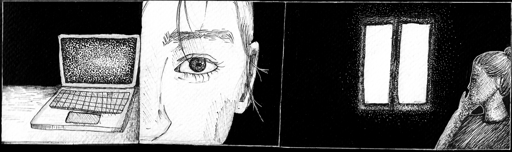
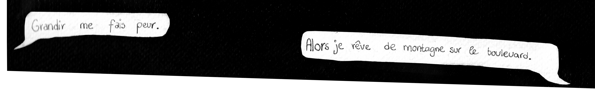

Fissure
• Illustrations
Fissure dans le béton est une de planche de bande dessinée. Elle parle de la frustration/peur de rester enfermer. Enfermé dans une vie, un immeuble, une situation qui nous fait se questionner sur le fait de tout fuir.



Processus
Ce dessin m’a accompagnée tout au long du mois d’août 2024.
Au fil des jours, j’ai remarqué que mon interprétation de
l’histoire évoluait, se transformant peu à peu. Des mots, des
fragments de pensées me sont restés en tête, et ils semblent
aujourd’hui trouver naturellement leur place aux côtés des
illustrations. Ces dessins ont été réalisés avec des techniques
diverses comme de la gouache, de l’encre de Chine, du crayon et
beaucoup, beaucoup de points de stylo ...